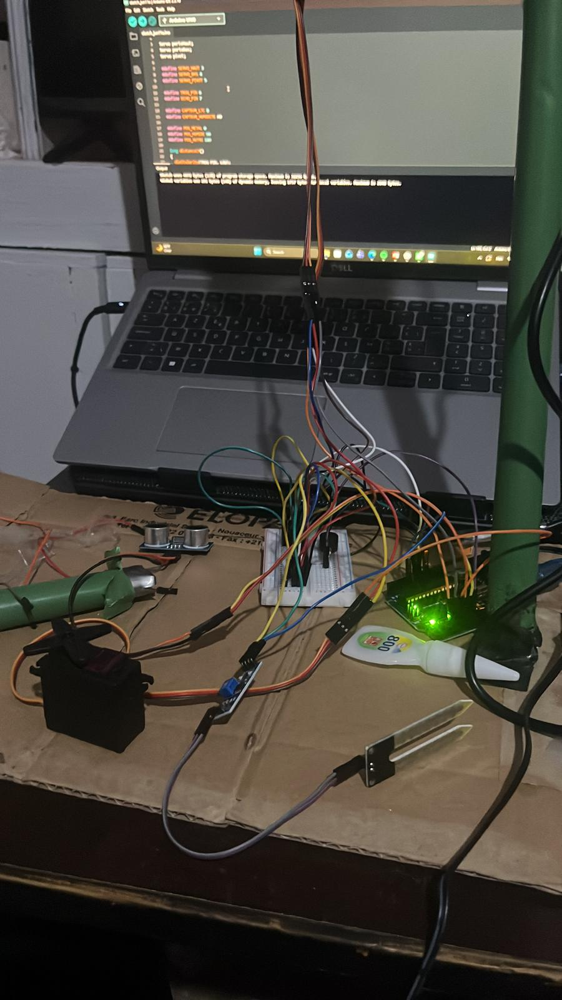

A little about me
Hands-on by nature.
Curious by default.
I’m Rayane Lebrazi, and I’m interested in all kinds of engineering, from programming and engines to practical, hands-on work. I love working on cars and figuring out how things fit together.
I prefer spending hours finding a way to automate a task rather than repeating it. Writing is another way I explore ideas. Sometimes I write code, working through a problem line by line until the pieces make sense. Other times I journal about everyday moments, questions, and what I am learning. I enjoy both because they help me slow down, notice details, and turn a jumble of thoughts into something clear. Whether I am building a long program or filling a few pages about my life, writing gives me room to think and reflect.